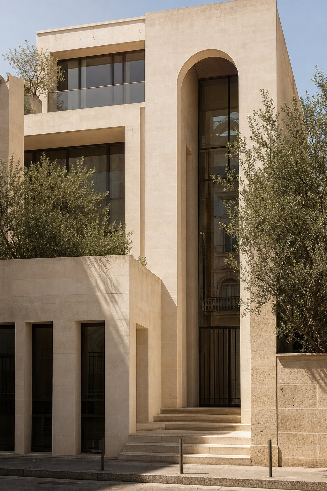

Organiser vos dossiers
Retrouvez projets, clients et informations utiles dans un espace structuré.
De la préparation d’une réunion au suivi de chantier, AURUM rassemble les outils essentiels à la vie de votre cabinet.

Un projet d’architecture se construit à plusieurs. AURUM vous aide à garder le fil, du bureau jusqu’au chantier.
Retrouvez projets, clients et informations utiles dans un espace structuré.
Gardez vos rendez-vous et les prochaines étapes à portée de main.
Documentez les échanges et rassemblez les éléments de chaque réunion.
Repérez les réserves, les tâches et les échéances à suivre.
Des outils concrets pour organiser le travail du cabinet, sans perdre de vue le terrain.
Centralisez vos dossiers, les coordonnées des clients et les informations de chantier.
Rédigez, ajoutez pièces jointes et commentaires, exportez en PDF et utilisez une signature manuscrite enregistrée.
Suivez les réserves, les photos, les tâches et leurs échéances au fil du projet.
Retrouvez vos rendez-vous dans l’agenda, avec export et abonnement calendrier.
Chronométrez le temps par dossier, consultez les relevés et suivez la facturation.
Partagez un compte rendu validé par lien temporaire et révocable ; le client peut accuser réception.
Préparez réserves, notes et photos dans le carnet de chantier hors ligne, puis synchronisez manuellement.
Gérez les rôles, la double authentification facultative et les sauvegardes.
Retrouvez les informations de votre cabinet dans un environnement clair, inspiré des étapes de vos projets.
Explorer la démonstration
Explorez librement un aperçu interactif, sans inscription. Rien n’est envoyé à l’application réelle.
Une vue d’ensemble de vos dossiers fictifs.
Aperçu indépendant et simplifié : les données et actions sont simulées, aucun e-mail n’est envoyé. La démonstration ne reproduit pas toutes les fonctions de l’application.
AURUM s’adresse aux cabinets d’architecture et aux équipes de maîtrise d’œuvre qui souhaitent réunir le suivi de leurs projets et de leurs chantiers.
La démonstration présente quelques usages avec des données fictives. L’application réelle dispose de son propre espace de connexion et de ses propres données.
Accéder à AURUMOrganisez les dossiers et préparez vos réunions.
Documentez les réserves et gardez une trace des points à suivre.
Partagez un compte rendu validé avec un accès temporaire.
Tout ce qu’il faut savoir avant de découvrir AURUM.
Aux cabinets d’architecture et aux équipes de maîtrise d’œuvre qui souhaitent organiser leurs projets, réunions et chantiers dans un même espace.
Non. Elle utilise uniquement des exemples fictifs et fonctionne localement dans votre navigateur, sans connexion à une base de production ni envoi d’e-mail. Vous pouvez la réinitialiser à tout moment.
Le mode hors ligne concerne le carnet de chantier : il permet de préparer des réserves, notes et photos, à synchroniser manuellement ensuite. Il ne concerne pas toute l’application.
Un compte rendu validé peut être consulté via un lien temporaire et révocable. Le destinataire peut accuser réception ; cet accusé n’est pas une signature électronique certifiée.
Non. C’est un aperçu autonome et simplifié. L’application réelle est distincte ; certaines fonctions, comme les e-mails et les automatismes, nécessitent une configuration serveur.
Découvrez une autre façon de garder le fil de vos projets.